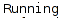

def GRAN_CDM_STATUS(): find(Pattern().similar(0.75).targetOffset(1,3)) #Finding Citrix button click() #Citrix Citrix button find() #Finding Terminal click() #Clicking Terminal type(, "cdm_cli ") #Typing the command type("-status ") #Typing the command type("BSC117"+Key.ENTER) #Typing the command wait(7) #waiting for 7 seconds to produce the output if(exists()): #Checking the validation wait(5) find() #If the scripts executes successfully it finds and closes the window click() else: #If the scripts could not perform the above steps, it will jump to else part and exceutes below steps. type("opt/ericsson/bin/cns_im_interface BSC BSC117"+Key.ENTER) type("cdm_cli -stop BSC117 stopping node"+Key.ENTER) wait(15) type("gsm_sync"+Key.ENTER) wait(10) type("cdm_cli -start BSC117 starting node"+Key.ENTER) wait(10) type("cdm_cli –status BSC117"+Key.ENTER) find() click()